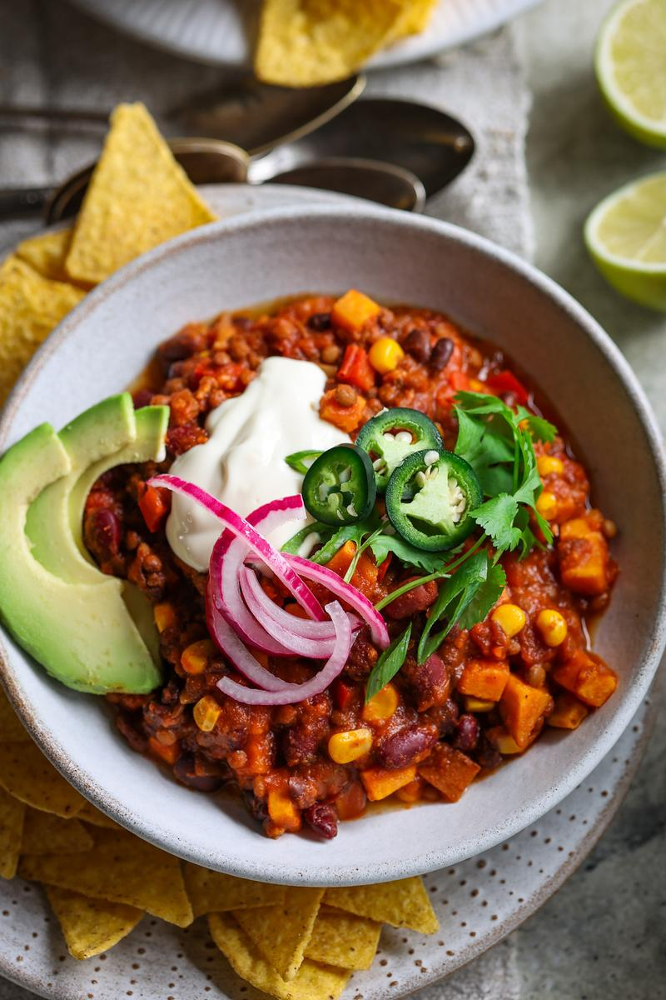

Sweet Potato Spiced Chili

Chili
This spicy chili is super hearty, comforting, filling, and makes for the perfect weeknight meal. We always like to make a massive batch as meal prep to enjoy throughout the week. Topping with avocado, lime, or yogurt really helps to marry all the flavors together.
Ingredients
- 1 Tbsp (15 mL) vegetable oil
- 1 large onion, chopped
- 4 cloves garlic, minced
- 1 Tbsp (6 g) ground cumin
- 1 Tbsp (8 g) chili powder, or less for less spicy
- 2 tsp (2 g) dried oregano
- 1 tsp (2 g) smoked sweet paprika powder
- ¼ tsp ground black pepper
- 2 Tbsp (33 g) tomato paste
- 3 cups (720 mL) canned crushed tomatoes
- 2 cups (480 mL) water
- 1½ cups (258 g) cooked black beans
- 1½ cups (266 g) cooked red kidney beans
- 1½ cups (297 g) cooked brown lentils
- 2 vegetable bouillon cubes, crushed
- 1 large sweet potato, finely chopped
- 1 red bell pepper, finely chopped
- ¾ cup (124 g) canned corn
Steps
- To a large pot on high heat, add the oil and onion and cook until golden.
- Then add the garlic and spices* and cook while stirring for another 1 - 2 minutes more.
- a bit more oil followed by tomato paste. Cook to toast for 1 more minute, stirring throughout.
- Deglaze the pot by adding in the crushed tomatoes, water, beans, lentils, crushed bouillon cubes, sweet potato, and bell pepper.
- Bring everything to a boil, reduce to a simmer, and cook partially covered for 30 minutes. Stir every 5 - 10 minutes.
- If a thicker consistency is desired, remove the lid and cook uncovered for several more minutes. Stir in the corn in the last few minutes before serving.
- Serve, add your desired toppings, and enjoy!